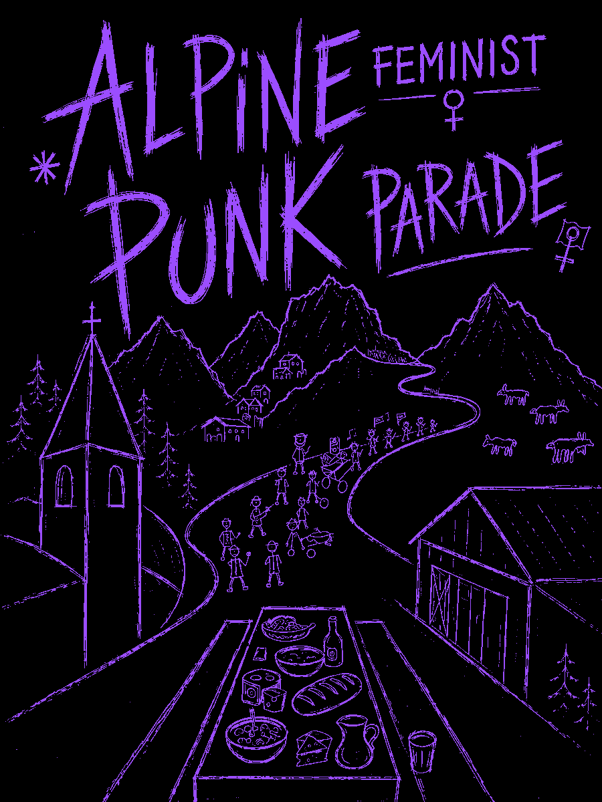

Bitácora
Alpine Feminist Punk Parade
A public text log: what is said in the #AFPP chat, and every derive shared on the Deriva Sonora global map. No audio here; the sounds are on the globe.
Times in your time zone; each day's file is in UTC.
…